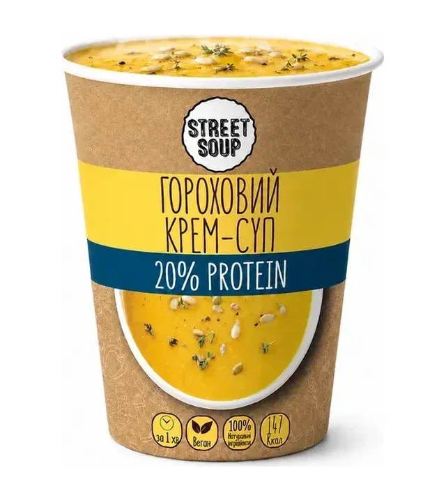
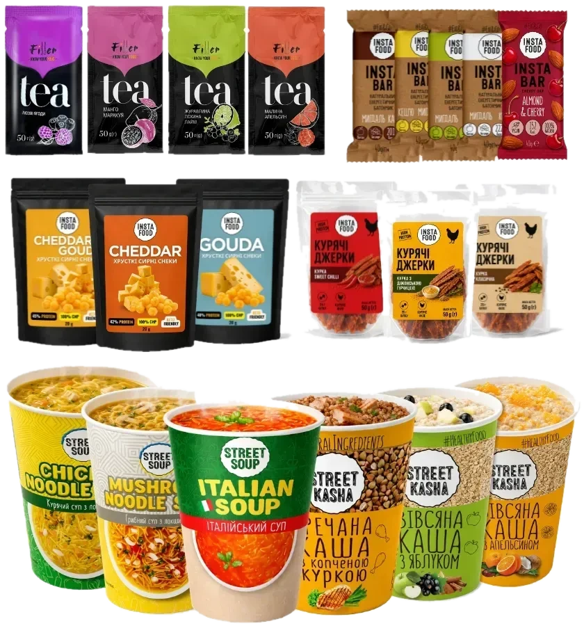
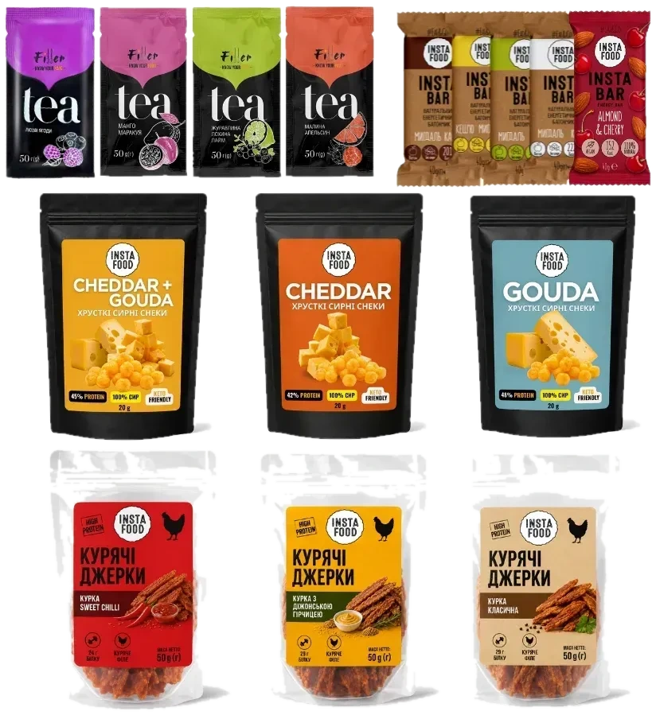
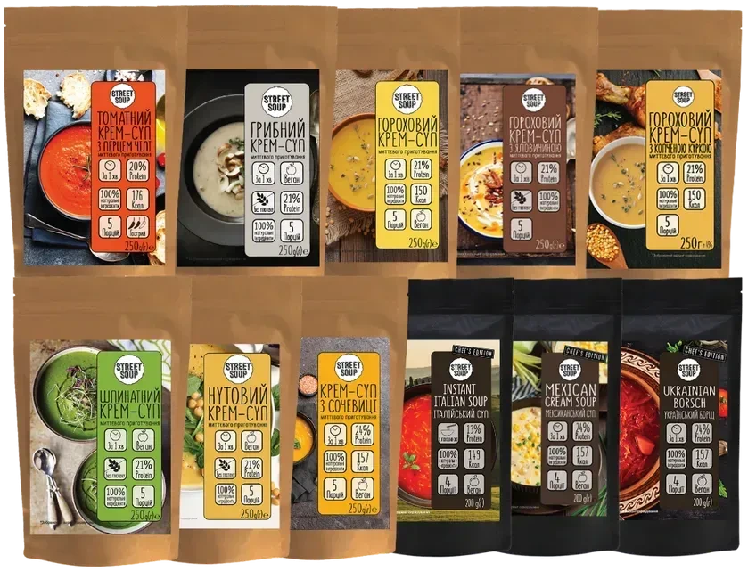
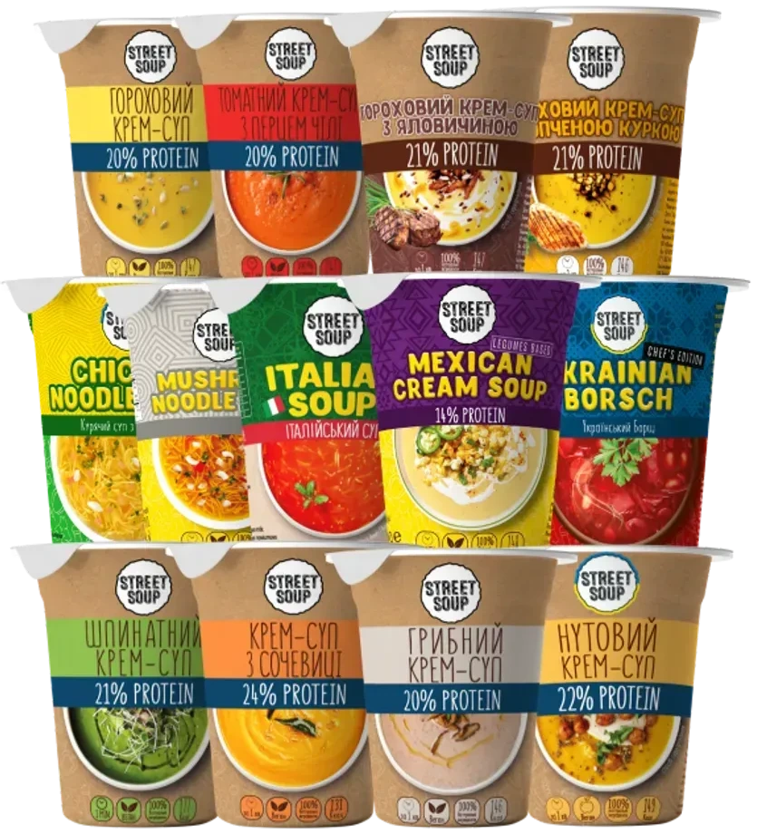
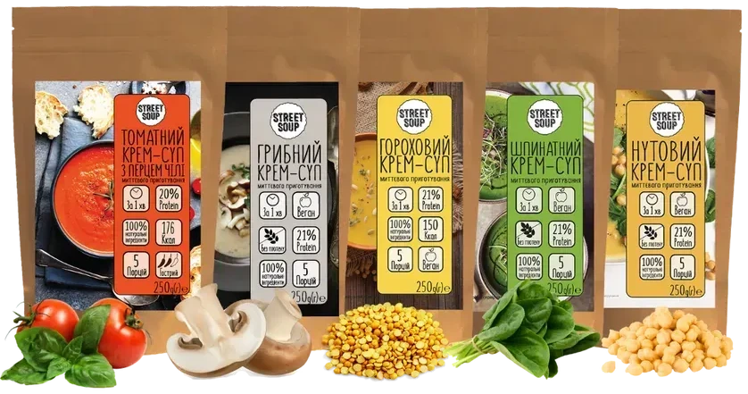
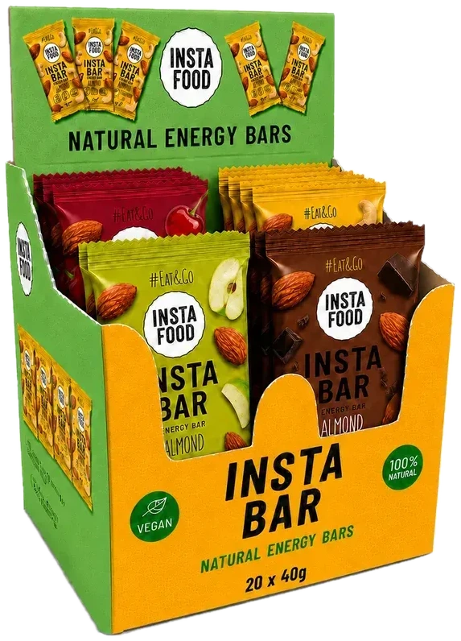
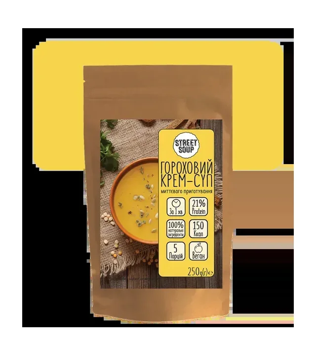
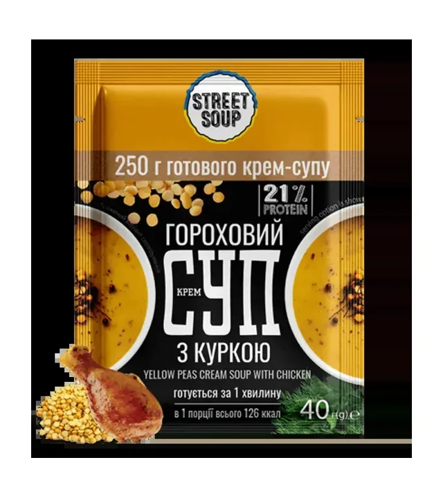

Натуральна їжа миттєвого приготування
Обід за хвилину.
Куди беремо?
Крем-супи готові за 1 хвилину, каші за 3: залийте гарячою водою, перемішайте й їжте. Оберіть, де будете їсти, і ми покажемо готовий набір.
- до 24% білка в супах
- від 1 хв до готовності
- зроблено в Україні

Для ситуації «У похід»
Набір TRAVEL
- 6 швидких страв: 3 супи й 3 каші
- 5 батончиків Insta Food
- 4 фруктові напої
- 3 сирні снеки й 3 курячі джерки
Гарячі страви готуються з окропом. Батончики, снеки й джерки готові до вживання.

Для ситуації «У дорогу»
Набір PICNIC
- 5 батончиків Insta Food
- 4 фруктові напої
- 3 хрусткі сирні снеки
- 3 курячі джерки
Батончики, снеки й джерки готові до вживання, їх не потрібно готувати.
836,63грн
55,78 грн за шт.
Або по одному
- Батончик Insta Food мигдаль какао, 40 г45,14 грн
- Курячі джерки з гірчицею, 50 г94,50 грн

Хіт продажуДля ситуації «Коли немає світла»
Big-набір Street Soup, 2,6 кг
- 52 порції сухих крем-супів у пакетах із zip-замком
- 1 порція: 50 г сухого й 300 г готового супу
- Смаки: гороховий, шпинатний, томатний, нутовий, грибний, борщ та інші
Для приготування достатньо гарячої води з термоса.
1 290,33грн
24,81 грн за порцію
Або по одному
- Крем-суп гороховий, пакет 250 г, 5 порцій103,94 грн
- Борщ український, пакет 200 г, 5 порцій125,99 грн

Хіт продажуДля ситуації «В офіс»
Набір ALL SOUP, 13 стаканів
- 13 стаканів: крем-супи й супи з локшиною
- Смаки: гороховий, грибний, томатний, мексиканський, борщ та інші
- Паличка або ложечка вже в стакані
Крем-суп: 250 г гарячої води й 1 хвилина. Суп з локшиною: 8 хвилин.
448,19грн
34,48 грн за порцію
Або по одному
- Крем-суп грибний, стакан36,74 грн
- Суп курячий з локшиною, стакан38,84 грн

Для ситуації «До посту»
Набір із 5 веганських супів
- Гороховий, шпинатний, томатний, нутовий і грибний крем-супи
- Веганська лінійка без лактози й горіхів
- Пакети з zip-замком
Залийте гарячою водою на 1 хвилину.

Хіт продажуДля ситуації «На перекус»
Mix-набір батончиків Insta Food
- 20 батончиків на основі фініків
- Смаки: мигдаль з какао, кокосом, яблуком, вишнею й чіа, кеш'ю з нутом
- Без цукру й молочних складників
Батончики готові до вживання, воду й плиту брати не потрібно.
892,29грн
44,61 грн за батончик
Або по одному
- Батончик Insta Food мигдаль какао, 40 г45,14 грн
- Хрусткі сирні снеки Gouda, 20 г89,15 грн
1 хвилина, на відео прискорено
У стакані: горох, куряче філе, кріп
Як це готується
Без плити, без каструлі й без миття. Потрібні гаряча вода й одна хвилина.
- 1
Відкрийте
Паперовий стакан, пакет із zip-замком або саше.
- 2
Залийте водою
250 г гарячої води для крем-супу, 150 г для каші.
- 3
Перемішайте
Крем-суп готовий за 1 хвилину, каша за 3, суп з локшиною за 8.
Беруть найчастіше
Усі хітиНе лише супи
Стакан, пакет чи саше?
Той самий крем-суп у трьох форматах. Порівняйте ціну за порцію й виберіть зручний.
Стакан 50 г
1 порція
34,64 грнза порцію
69,28 грн за 100 г сухого
Усе в одному паперовому стакані: залили водою й їсте.
Офіс, дорога, навчання
Супи в стакані
Пакет 250 г
5 порцій
20,79 грнза порцію
41,58 грн за 100 г сухого
Найнижча ціна за порцію. Zip-замок для зберігання.
Дім, похід, сім'я
Супи 5 порцій
Саше 40 г
1 порція
60,35 грн за 100 г сухого
Найлегший формат. Потрібна ваша чашка й гаряча вода.
Рюкзак і кишеня
Супи у сашеЦіна за порцію: гороховий крем-суп; ціна за 100 г рахується від ціни без знижки. Пакет 250 г рахуємо як 5 порцій за назвою категорії на сайті. Знижка −10% на саше діє за станом на 26.10.2026.
Доставка й оплата
Відправляємо зі складу в Чернігові
Замовлення їдуть напряму з виробництва службами Нова пошта й Укрпошта. Самовивіз зі складу безкоштовний: вул. Громадська, 45.
Через відключення електроенергії в Чернігові відправка може затримуватися.
Умови доставки й оплати- 299 грн
- мінімальне замовлення
- 1–5 днів
- доставка Новою поштою, терміни орієнтовні
- від 2 500 грн
- безкоштовна доставка до відділення Укрпошти
- від 3 500 грн
- безкоштовна доставка до відділення Нової пошти
- Оплата
- Карткою онлайн (LiqPay, plata by mono) · при отриманні з передоплатою 200 грн · безготівково для ФОП і юросіб
Що кажуть покупці
Усі відгукиЗамовляла для сина, який навчається та проживає в гуртожитку. Він вибагливий до їжі, але залишився задоволений. Дякую виробнику, швидко доставили, гарне пакування. Замовлятиму ще!
Відмінна українська альтернатива фастфуду! Смачно, натуральний продукт, який рятує в умовах браку часу. Однозначно рекомендую підтримати українського виробника!
Надзвичайно смачні, корисні та поживні супи! Ідеально для посту, вегетаріанців, веганів і всіх, хто віддає перевагу здоровому харчуванню.
Кав’ярня, АЗС або магазин?
Street Soup шукає партнерів серед закладів, що продають їжу. Пропонуємо вигідні оптові ціни й широкий асортимент. Напишіть на streetsoupua@gmail.com із темою «Співпраця Street Soup» або в Viber, Telegram, WhatsApp за номером +38 093 208 8066.